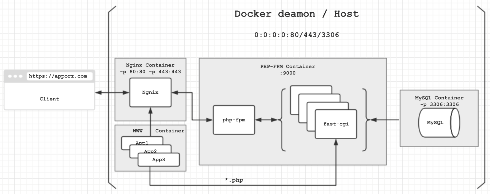

1. Docker
Docker的官方定义是：
Docker allows you to package an application with all of its dependencies into a standardized unit for software development.
毫无疑问的是，Docker解决了应用部署上一个巨大的问题：
客户: 安装好了，用不了。
发布者：我的机器上没问题。
如何解决每个应用的依赖在Docker出现之前是个头疼的问题，现在仅仅通过一次配置，Dockerfile或者image作为最终交付，就能在任何Linux上完美运行了。说起来很简单的样子，但在Docker配置过程中，又存在很多值得思考的问题：应用各个组件如何安排？一个Container解决问题还是细化Container？Container之间何如通信？等等。。下面用一个最普遍的WEB应用配置部署来说明这些问题。
NOTE：本文假定读者对Docker中的一些概念有基本的认识，如果不甚了解，我推荐这篇文章：
https://linux.cn/article-6074-weibo.html
2. LNMP
典型的PHP应用配置方案是LAMP或者LNMP，本文以LNMP为例。
设计方案如下图:

应用由4个组件组成，分别是Nginx，PHP-FPM(PHP)，MySQL以及WWW，4个组件运行在由各自镜像创建出来的独立的容器中。其中WWW Container只是一个存储业务代码和静态资源的容器，可以认为是”死”的。
事实上LNMP架构采用上面的设计方式应该是最容易想到的，也是最清晰的，每个组件有相对的独立性。其中除了WWW容器，其他3个容器都可以直接通过官方镜像构建出来。
然而网上很多同学并不是这样做的，不会分的这么细，通常是把Nginx和WWW放到一个容器内，或者干脆全部放到一个容器中。可以学习一下大家的Dockerfile:
https://github.com/search?utf8=✓&q=docker-lnmp
细化Container这种设计的优缺点：
- 容器间的耦合性增大。可以看到PHP-FPM容器和另外三个容器间有耦合关系，MySQL容器最独立。
- 虽然耦合性比较大，但这种端口耦合，文件系统耦合关系可以通过增加几个运行选项解决掉，后面有介绍。
- 由于容器对整个架构的划分，使得容器中的内容变得十分独立和安全。例如，我希望在线上更新WWW中的代码，只需要进入WWW容器做修改，不会影响到Nginx，PHP-FPM或者是MySQL。
- 各容器可灵活拆卸更换，比如我想把MySQL换成Mongodb，或者干脆把业务代码搬个家，不会影响到其他容器（仅仅更改相关配置文件）
- 由于各容器经由官方的镜像创建，因此可以随时花最少的代价使用最新的官方镜像尝鲜。
- 占用空间会比较大，一个简单的应用要这么做的话，四个镜像会占用大量的存储空间。
2.1 容器间通信问题
细化Container面临着另一个问题，就是如何进行容器间通信。下面简要描述一下上图中的数据流程：
- 客户端的http请求达到server的80端口，该端口被映射到Nginx Container的80端口，因此进入Nginx处理。Nginx会分析请求资源，判定是静态资源还是php脚本，如果是静态资源，则直接从WWW中取出发回客户端；如果是脚本程序，则要告诉PHP-FPM到WWW获取相应脚本，然后通过php-cgi处理。
- fast-cgi通过php执行脚本，必要时访问MySQL存取数据。
这样耦合关系就出来了：
- Nginx需要连接PHP-FPM开放的9000端口，需要访问WWW中的文件系统。
- PHP-FPM也需要访问WWW中的文件系统，还要访问MySQL的3306端口。
2.2 解决问题
可以看出有两类耦合关系：端口和文件系统。
对于端口耦合，docker是通过–link选项解决的；对于文件系统耦合，docker是通过–volumes-from选项解决的。
解决第一个耦合关系：
1 | $ sudo docker run -p 80:80 -p 443:443 # 主机端口映射到容器 |
解决第二个耦合关系：
1 | $ sudo docker run --volumes-from WWW_CONTAINER_NAME |
参考文档：https://docs.docker.com/reference/run/
因此容器启动的先后顺序就出来了：
- MySQL Container
- WWW Container (由于没有任何服务运行，容器run后会立即exit，可以使用 tail -f 等block命令使容器保持运行不退出)
- PHP-FPM Container
- Nginx Container
其中1和2可以对换。
3. Dockerfile
Dockerfiles 请参见：
https://github.com/micooz/dockerfile
http://git.oschina.net/micooz/dockerfile
4. 总结
利用Docker部署Web应用可以带来很多便利，在宏观上实现应用组件化，为实现分布式系统奠定了基础。
可以看到实际上在Docker容器间共享数据是很方便的，搞清楚各容器的依赖关系就不难解决。
P.s. 本文是我学习docker两天后的心得体会，纰漏在所难免，如有错误还请斧正。